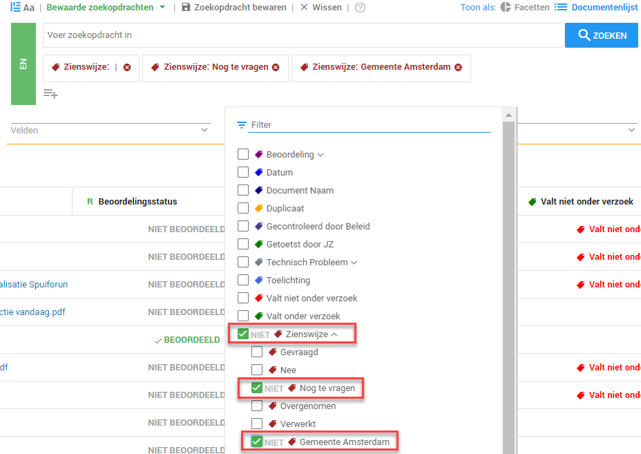
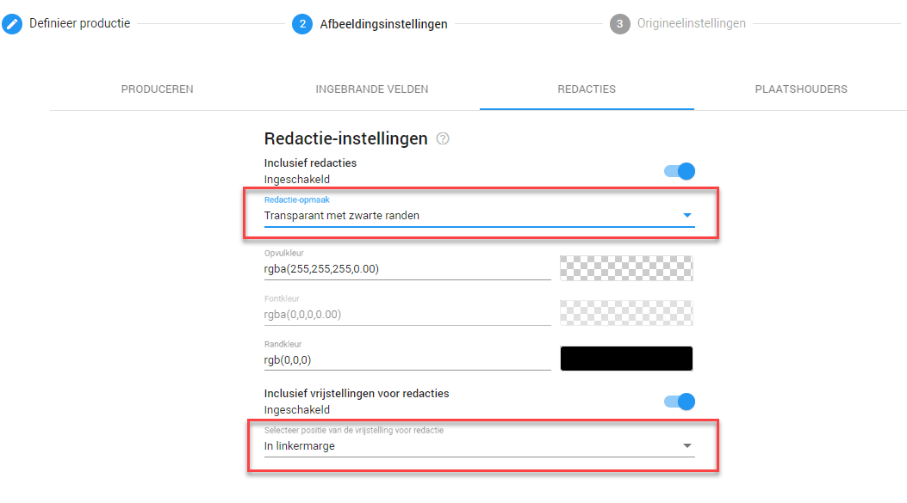

Om documenten te produceren ter behoeve van een zienswijze, dient de tekst nog steeds leesbaar te zijn voor de belanghebbende. We beginnen dit proces met het selecteren van de te produceren documenten. U doet dit door in de zoekbalk onder Labels het label Zienswijze te vinden, Nog te vragen en de betreffende belanghebbende. Vervolgens klikt u op Zoeken.

U heeft nu alle documenten gevonden van een door u geselecteerde belanghebbende waarvan de zienswijze nog opgevraagd dient te worden. Vervolgens volgt u de stappen zoals beschreven in het topic Documenten produceren met permanente aflakking en inventarislijst. Bij de afbeeldingsinstelling, zoals beschreven bij Afbeeldingsinstellingen, selecteert u echter onder Redactie-opmaak Transparant met zwarte randen en onder Selecteer positie van de vrijstelling voor redactie In linkermarge.

Indien u geen inventarislijst wenst voor de zienswijze kunt u de stappen bij Load file overslaan.